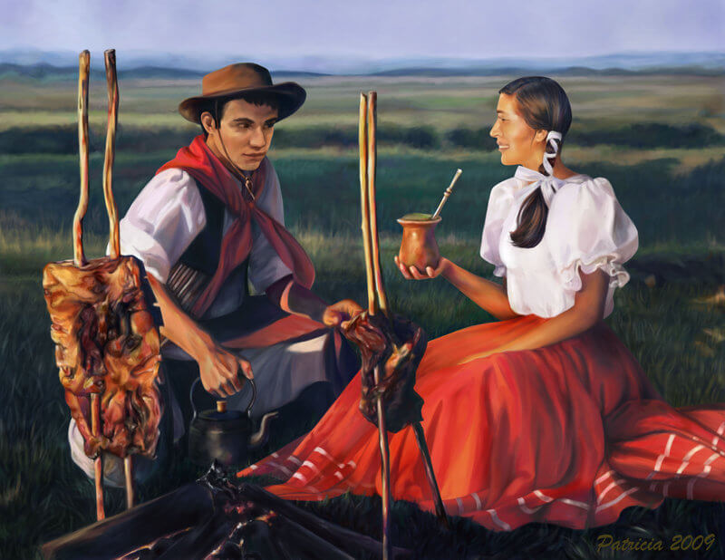

Pontos Turísticos
Conheça destinos como Gramado, Canela, os cânions e a maior praia do mundo. Saiba mais
Gastronomia
Saboreie o tradicional churrasco, chimarrão, cuca e outras delícias típicas. Veja pratos

Cultura Gaúcha
Descubra festas, danças, música e o orgulho de ser gaúcho. Veja fotos